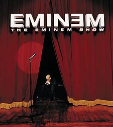
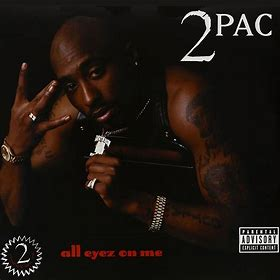
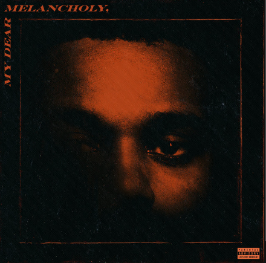

#1 on keidboard
#1 on keidboard
#1 on keidboard
#1 on keidboard
#1 on keidboard
Written by Keidi Tota Date 28 December 2023
"Let It Happen" by Tame Impala is an eight-minute sonic journey that masterfully blends psychedelic rock, electronic, and dance music elements. The track, serving as the lead single from the album "Currents," introduces a pulsating synth pattern that sets the stage for a mesmerizing exploration of sound. Kevin Parker's falsetto vocals navigate through intricate layers of psychedelic guitar riffs and swirling synths, while the lyrics delve into themes of change and acceptance. The song features dynamic shifts in tempo and mood, culminating in a euphoric and hypnotic middle section with a danceable groove. With its innovative production and genre-defying approach, "Let It Happen" stands as a testament to Tame Impala's ability to push the boundaries of contemporary music, earning critical acclaim and becoming a standout piece in their discography.
"Exchange" by Bryson Tiller is a captivating R&B track that revolves around the theme of love and heartbreak. Released as part of his debut studio album "Trapsoul" in 2015, the song is characterized by its smooth production, which includes a sample of K.P. and Envyi's 1998 hit "Swing My Way." Tiller's soulful vocals take center stage as he explores the complexities of a tumultuous relationship, addressing themes of betrayal and yearning for reconciliation. The lyrics are emotionally charged, and Tiller's delivery adds a raw authenticity to the narrative. "Exchange" showcases Bryson Tiller's ability to seamlessly blend contemporary R&B with elements of hip-hop, making it a standout and emotionally resonant track in his discography.
"Clouded" by Brent Faiyaz is a soulful and introspective track that captures the artist's emotive vocals and contemplative lyrics. Released as part of his debut project "A.M. Paradox" in 2016, the song showcases Faiyaz's ability to blend R&B with elements of alternative and indie music. With a smooth and atmospheric production, "Clouded" creates a dreamy soundscape that complements Faiyaz's soul-stirring voice. The lyrics delve into themes of self-reflection, relationships, and navigating life's uncertainties, painting a vivid emotional landscape. The song's minimalist yet evocative approach and Faiyaz's raw, sincere delivery contribute to its resonance, making "Clouded" a standout piece in Brent Faiyaz's evolving body of work.
"Fair Trade" by Drake is a standout track from his sixth studio album, "Certified Lover Boy," released in 2021. The song features a collaboration with Travis Scott and is marked by its atmospheric production and introspective lyrics. With a moody and haunting instrumental, "Fair Trade" creates a captivating backdrop for Drake and Travis Scott to deliver verses that touch on themes of fame, relationships, and the complexities of the music industry. The collaboration between the two artists brings a dynamic energy to the track, with Drake's signature introspection complemented by Travis Scott's distinct vocal style. The song explores the highs and lows of success, all within the context of a hypnotic and melodic soundscape, making "Fair Trade" a compelling addition to Drake's expansive discography.
"Starboy" by The Weeknd is a chart-topping single from his 2016 album of the same name. This electro-pop and R&B fusion track, featuring Daft Punk, marked a stylistic evolution for The Weeknd. With its infectious beats and futuristic production, "Starboy" embodies a narrative of fame and excess. The lyrics delve into the trappings of celebrity life, showcasing The Weeknd's introspective take on the challenges that come with success. The collaboration with Daft Punk adds a layer of electronic sophistication to the song, contributing to its overall cosmic and cinematic feel. "Starboy" became a commercial success and is celebrated for its catchy hooks, sleek production, and The Weeknd's smooth vocal delivery, solidifying his status as a pop icon.